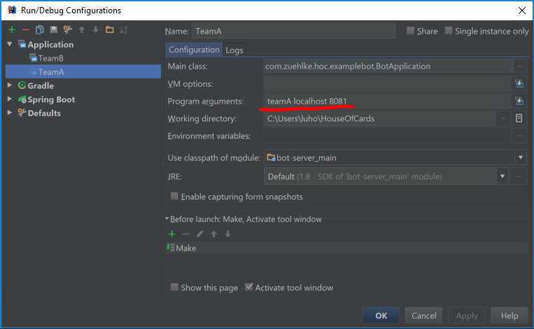

Testdrive the competition runner
In order to smoke test the game-engine (competition runner) we provide two bots that will register for a game and act on messages received from the game-engine. This is a step by step description to run the test.
Start the game-engine with the following commands:
Change to the directory. HouseOfCards/game-engine/game-server
run the command:
gradle run. This will start the game-engine listening on TCP port 8080 on your local host.Select the Intellij IDEA module "bot/bot-server".
- Open the Run menu and select "Run...".
- Select "Edit configuration in the pop-up window. Main class has to be "BotApplication".
- In the field "Program arguments" enter the following arguments: teamA localhost 8081. (see screenshot)
- Click "Run". This will start a bot that registers itself at the game-engine and listens on the TCP http://localhost:8081
- Repeat steps 4-7 to start a second bot that listens on port 8082 by providing the corresponding argument.
As soon as the game-engine receives two registrations it will broadcast a GameEvent message telling the bots to start the game. Upon receiving the GameEvent message both bots will acknowledge the reception and shutdown.
